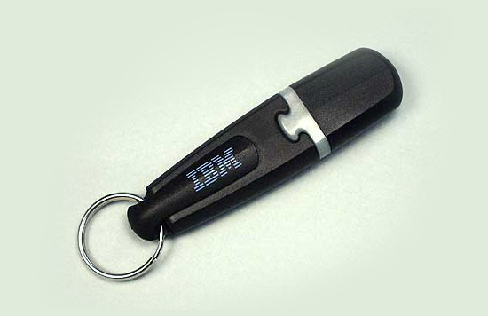

История создания флешек началась в 1984 году в Японии, с изобретением компанией Toshiba полупроводниковой перепрограммируемой флеш-памяти. В 1989 году появился первый чип с флеш-памятью типа NAND, большая плотность компоновки которой позволила создавать микросхемы зачительного объема. В 1994—1996 был разработан первый стандарт интерфейса USB.
К концу 1990-х назрела необходимость в накопителе превосходящим дискеты своим объемом и надежностью. Накопители Iomega Zip не смогли завоевать достаточную популярность, чтобы стать стандартом. Миниатюрные жесткие диски Microdrive отличались высокой ценой и низкой надежностью. Компакт-диски позволяли хранить большой объем информации и со временем вытеснили накопители на гибких магнитных дисках, но для их чтения необходим оптический привод. Лучшим способом хранения и переноса информации стали накопители подключаемые по интерфейсу USB c флеш-памятью типа NAND. Для их использования не требовался дополнительный привод или картридер. Они миниатюрны, но способны хранить большой объем информации.
Самые первые USB-флеш-накопители (или просто флешки) появились в 2000 году. Их изобрели сотрудники израильской компании M-Systems Амир Баном, Дов Моран и Оран Огдан. В апреле 1999 года в США был зарегистрирован патент на флешку, а в сентябре 2000 года был представлен и сам накопитель. Флешку назвали DiskOnKey, в США она продавалась совместно с IBM и несла на борту логотип американской корпорации. Первая флешка обладала 8 Мб памяти и стоила 50$, к концу года вышли модели на 16 Мб и 32 Мб (100$).